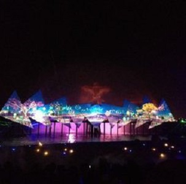
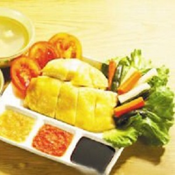
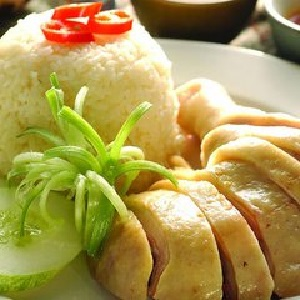
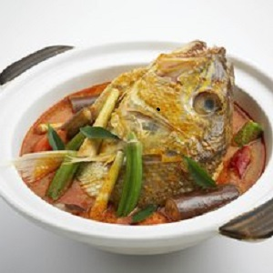
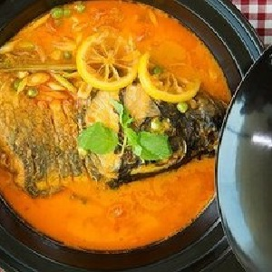

morly旅游网
新加坡，全称为新加坡共和国（英语： Republic of Singapore），旧称新嘉坡、星洲或星岛，别称为狮城，是东南亚的一个岛国，政治体制实行议会制共和制。新加坡北隔柔佛海峡与马来西亚为邻，南隔新加坡海峡与印度尼西亚相望，毗邻马六甲海峡南口，国土除新加坡岛之外，还包括周围数岛。 14世纪，新加坡属于拜里米苏拉建立的马六甲苏丹王朝。19世纪初被英国占为殖民地。1942年2月15日，新加坡被侵略的日军占领。1965年，新加坡正式独立。 新加坡是一个多元文化的移民国家，促进种族和谐是政府治国的核心政策，新加坡以稳定的政局、廉洁高效的政府而著称，是全球最国际化的国家之一。
下面来看看旅游景点吧：
新加坡环球影城
该景点坐落于圣淘沙岛，拥有东南亚独一无二的环球影城主题公园、全球最大的海洋生物园、赌城、各类娱乐演出以及六家风格各异的星级酒店等。影城内包含了7个主题区，分别为：好莱坞、纽约、科幻城市、古埃及、迷失世界、遥远王国及马达加斯加，都是以好莱坞卖座电影设计出的精彩游乐项目。其中包括：变形金刚3D对决之终极战斗、史瑞克4D影院、马达加斯加：木箱漂流记、侏罗纪河流探险等。
圣陶沙
圣淘沙（意思是平静而安详），是新加坡最为迷人的度假小岛占地500公顷，有着多姿多彩的娱乐设施和休闲活动区域，被誉为欢乐宝石。岛的南岸有长度超过2公里的海滩，西面安置着二战英军留下的西罗索炮台、两个高尔夫球场及7间酒店。当中包括圣淘沙名胜世界、新加坡环球影城、蝴蝶馆、海豚世界、昆虫王国等。
再看看美食介绍吧：
新加坡是一个美食天堂。多元的文化和丰富的历史使新加坡拥有了足以骄傲的美食。来自中国、印度、马来西亚等诸多国家的饮食文化在这个亚洲美食的大熔炉里的火热碰撞、各显所长。
海南鸡饭
海南鸡饭是新加坡早期移民的菜色。做法简单：鲜嫩多汁的白斩鸡搭配油光黄澄香鸡饭，配生抽或者老抽和特制辣椒酱及姜蓉。烹调海南鸡饭的每一部分都必须一丝不苟，方能做出美味无比的佳肴，是新加坡美食之选。
 咖哩鱼头
咖哩鱼头是最具新加坡风味的美食代表之一，这道香辣的印度佳肴以一大块石斑鱼头或红鲷鱼头为主，盛在一大碗热腾腾的咖哩汤中上桌，汤味辛辣香浓，鱼头鲜嫩美味。
 内容整理至网络，如有侵权，请联系我们！1255394075@qq.com